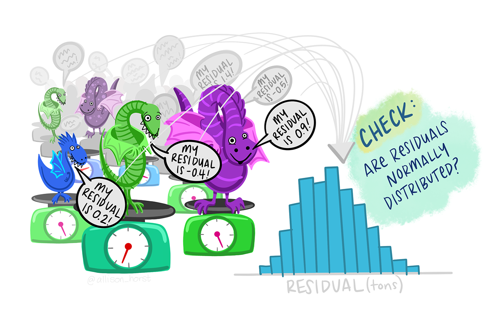

neuron <- bind_rows(db, msn)Workshop
Two-way ANOVA
Introduction
Session overview
In this workshop you will get practice in applying, interpreting and reporting two-way ANOVA including the interaction term and post-hoc testing.
Philosophy
Workshops are not a test. It is expected that you often don’t know how to start, make a lot of mistakes and need help. It is expected that you are familiar with independent study content before the workshop. However, you need not remember or understand every detail as the workshop should build and consolidate your understanding. Tips
- don’t worry about making mistakes
- don’t let what you can not do interfere with what you can do
- discussing code with your neighbours will help
- look things up in the independent study material
- look things up in your own code from earlier
- there are no stupid questions
Key
These four symbols are used at the beginning of each instruction so you know where to carry out the instruction.
 Something you need to do on your computer. It may be opening programs or documents or locating a file.
Something you need to do on your computer. It may be opening programs or documents or locating a file.
 Something you should do in RStudio. It will often be typing a command or using the menus but might also be creating folders, locating or moving files.
Something you should do in RStudio. It will often be typing a command or using the menus but might also be creating folders, locating or moving files.
 Something you should do in your browser on the internet. It may be searching for information, going to the VLE or downloading a file.
Something you should do in your browser on the internet. It may be searching for information, going to the VLE or downloading a file.
 A question for you to think about and answer. Record your answers in your script for future reference.
A question for you to think about and answer. Record your answers in your script for future reference.
Getting started
Start RStudio from the Start menu.
Go the Files tab in the lower right pane and click on the ... on the right. This will open a “Go to folder” window. Navigate to a place on your computer where you keep your work. Click Open.
Make an RStudio project for this workshop by clicking on the drop-down menu on top right where it says Project: (None) and choosing New Project, then New Directory, then New Project. Navigate to the data-analysis-in-r-2 folder and name the RStudio Project week-5.
Make new folders called data-raw and figures. You can do this on the Files Pane by clicking New Folder and typing into the box that appears.
Make a new script then save it with a name like two-way-anova.R and load the tidyverse (Wickham et al. 2019) package
Add a comment to the script: # Two-way ANOVA
Exercises
Effect of brain region and choline deficiency on neuron size
Cognitive performance is influenced by the choline intake in utero. To better understand this phenomenon, pregnant mice were fed a control or choline-deficient diet and their offspring examined. The cross sectional area (CSA) of cholinergic neurons was determined in two brain regions, the MSN and the DB. The data are given in neuron-csa.xlsx
Save a copy of the data file neuron-csa.xlsx to data-raw
You have previously read data from an excel file.
List the the names of the work sheets in the excel workbook.
These data are organised into two worksheets, one for each brain region
Read in each sheet. I used the names db and msn for the two dataframes/tibble.
We have the top half and the bottom half of a data set and can combine these togther with bind_rows()
You might want to click on neuron in the environment to open the spreadsheet-like view to check it looks how you expect.
What kind of variables do you have?
Exploring
When we have a single explanatory variable, it always goes on the x-axis. Here we have two explanatory variables: brain region and diet. We can map one of the explanatory variables to the x-axis and the other to a aesthetic like colour, shape or fill.
Do a quick plot of the data:
ggplot(data = neuron, aes(x = BrainRegion, y = CSA, fill = Diet)) +
geom_violin()
Whether we map BrainRegion to the x-axis or the fill does not really matter. It looks as though the cross sectional area of neurons is higher for the control diet than the deficient diet (the average of the read bars is grater than the average of the blue bars). It also looks like there might be a significant interaction between the effects of diet and brain region because the effect of diet seems to be greater in the DB region.
Summarising the data
Just as we needed to incorporate the second explanatory variable in the rough plot, we need to incorporate it into our summary. We do this by adding it to the group_by().
Create a data frame called neuron_summary that contains the means, standard deviations, sample sizes and standard errors for each group:
You will get a message that you don’t need to worry about summarise()has grouped output by 'BrainRegion'. You can override using the.groupsargument.>
You should get the following numbers:
| BrainRegion | Diet | mean | std | n | se |
|---|---|---|---|---|---|
| DB | Control | 26.6645 | 3.633975 | 10 | 1.1491638 |
| DB | Deficient | 21.2245 | 4.213968 | 10 | 1.3325736 |
| MSN | Control | 20.9695 | 2.779860 | 10 | 0.8790688 |
| MSN | Deficient | 19.9325 | 2.560446 | 10 | 0.8096842 |
Applying, interpreting and reporting
We can now carry out a two-way ANOVA using the same lm() function we used for two-sample tests and one-way ANOVA.
Carry out an ANOVA and examine the results with:
Call:
lm(formula = CSA ~ BrainRegion * Diet, data = neuron)
Residuals:
Min 1Q Median 3Q Max
-6.6045 -2.6308 0.0765 2.4820 5.5505
Coefficients:
Estimate Std. Error t value Pr(>|t|)
(Intercept) 26.664 1.064 25.071 < 2e-16 ***
BrainRegionMSN -5.695 1.504 -3.786 0.000560 ***
DietDeficient -5.440 1.504 -3.617 0.000907 ***
BrainRegionMSN:DietDeficient 4.403 2.127 2.070 0.045692 *
---
Signif. codes: 0 '***' 0.001 '**' 0.01 '*' 0.05 '.' 0.1 ' ' 1
Residual standard error: 3.363 on 36 degrees of freedom
Multiple R-squared: 0.4034, Adjusted R-squared: 0.3537
F-statistic: 8.115 on 3 and 36 DF, p-value: 0.0002949Remember: the tilde (~) means test the values in CSA when grouped by the values in BrainRegion and Diet Or explain CSA with BrainRegion and Diet
Can you relate the values under Estimate to the means?
The model of brain region and diet overall explains a significant amount of the variation in the cross sectional area of neurons (p-value: 0.0002949). To see which of the three effects are significant we can use the anova() function on our model.
Determine which effects are significant:
anova(mod)Analysis of Variance Table
Response: CSA
Df Sum Sq Mean Sq F value Pr(>F)
BrainRegion 1 122.05 122.045 10.7893 0.002280 **
Diet 1 104.88 104.879 9.2717 0.004334 **
BrainRegion:Diet 1 48.47 48.466 4.2846 0.045692 *
Residuals 36 407.22 11.312
---
Signif. codes: 0 '***' 0.001 '**' 0.01 '*' 0.05 '.' 0.1 ' ' 1There is a significant effect of brain region (F = 10.8; d.f. = 1, 36; p = 0.002) and diet (F = 9.3; d.f. = 1, 36; p = 0.004) on CSA and these effects interact (F = 4.3; d.f. = 1, 36; p = 0.046)
We need a post-hoc test to see which comparisons are significant and can again use then emmeans (Lenth 2023) package.
Load the package
Carry out the post-hoc test
contrast estimate SE df t.ratio p.value
DB Control - MSN Control 5.695 1.5 36 3.786 0.0030
DB Control - DB Deficient 5.440 1.5 36 3.617 0.0048
DB Control - MSN Deficient 6.732 1.5 36 4.476 0.0004
MSN Control - DB Deficient -0.255 1.5 36 -0.170 0.9982
MSN Control - MSN Deficient 1.037 1.5 36 0.689 0.9005
DB Deficient - MSN Deficient 1.292 1.5 36 0.859 0.8257
P value adjustment: tukey method for comparing a family of 4 estimates Each row is a comparison between the two means in the ‘contrast’ column. The ‘estimate’ column is the difference between those means and the ‘p.value’ indicates whether that difference is significant.
A plot can be used to visualise the result of the post hoc which can be especially useful when there are very many comparisons.
Plot the results of the post-hoc test:

What do you conclude from the test?
We might report this result as:
A choline-deficient diet in pregnant mice significantly decreases the cross sectional area of cholinergic neurons in the DB region of their offspring (t = 3.62; d.f. = 36; p = 0.0048). The cross sectional area of cholinergic neurons in the MSN region are also significantly smaller than those in the DB region (t = 3.79; d.f. = 36; p = 0.0030) but are not reduces by maternal choline-deficiency.
Check assumptions
The assumptions of the general linear model are that the residuals – the difference between predicted value (i.e., the group mean) and observed values - are normally distributed and have homogeneous variance. To check these we can examine the mod$residuals variable. You may want to refer to Checking assumptions in the “Single regression” workshop.
Plot the model residuals against the fitted values.
What to you conclude?
To examine normality of the model residuals we can plot them as a histogram and do a normality test on them.
Plot a histogram of the residuals.
Use the shapiro.test() to test the normality of the model residuals
What to you conclude?
Illustrating
We are going to create a figure like this:

We will again use both our neuron and neuron_summary dataframes.
Try emulating what you did for one-way ANOVA based on Visualise from the “Summarising data with several variables” workshop (Rand 2023).
ggplot() +
geom_point(data = neuron,
aes(x = BrainRegion, y = CSA),
position = position_jitter(width = 0.1, height = 0),
colour = "gray50",
size = 3) +
geom_errorbar(data = neuron_summary,
aes(x = BrainRegion,
ymin = mean - se,
ymax = mean + se),
width = 0.4) +
geom_errorbar(data = neuron_summary,
aes(x = BrainRegion,
ymin = mean,
ymax = mean),
width = 0.3,
linewidth = 1) +
scale_y_continuous(name = "CSA",
expand = c(0, 0),
limits = c(0, 45)) +
scale_x_discrete(name = "BrainRegion") +
theme_classic() 
How can we show the two diets separately?
We can map the Diet variable to the shape aesthetic!
ggplot() +
geom_point(data = neuron,
aes(x = BrainRegion, y = CSA, shape = Diet),
position = position_jitter(width = 0.1, height = 0),
colour = "gray50",
size = 3) +
geom_errorbar(data = neuron_summary,
aes(x = BrainRegion,
ymin = mean - se,
ymax = mean + se),
width = 0.4) +
geom_errorbar(data = neuron_summary,
aes(x = BrainRegion,
ymin = mean,
ymax = mean),
width = 0.3,
linewidth = 1) +
scale_y_continuous(name = "CSA",
expand = c(0, 0),
limits = c(0, 45)) +
scale_x_discrete(name = "BrainRegion") +
theme_classic() 
Oh, that isn’t quite what we want! We want the two diets side-by-side, not on top of each other.
We can achieve that by using setting the position argument to position_jitterdodge() in the geom_point() and to position_dodge() in the two geom_errorbar(). We also have to specify that the error bars are grouped by Diet since they are not otherwise mapped to a shape, colour or fill.
ggplot() +
geom_point(data = neuron,
aes(x = BrainRegion, y = CSA, shape = Diet),
position = position_jitterdodge(dodge.width = 1,
jitter.width = 0.3,
jitter.height = 0),
colour = "gray50",
size = 3) +
geom_errorbar(data = neuron_summary,
aes(x = BrainRegion,
ymin = mean - se,
ymax = mean + se,
group = Diet),
width = 0.4,
position = position_dodge(width = 1)) +
geom_errorbar(data = neuron_summary,
aes(x = BrainRegion,
ymin = mean,
ymax = mean,
group = Diet),
width = 0.3,
linewidth = 1,
position = position_dodge(width = 1)) +
scale_y_continuous(name = "CSA",
expand = c(0, 0),
limits = c(0, 45)) +
scale_x_discrete(name = "BrainRegion") +
theme_classic() 
Add the annotation of the statistical results
Finally, we can move the legend to a space on the plot area which helps you minimise the width needed like this:
...... +
theme(legend.position = c(0.15, 0.15),
legend.background = element_rect(colour = "black")) Save your figure to your figures folder.
You’re finished!
ü•≥ Well Done! üéâ

Independent study following the workshop
The Code file
This contains all the code needed in the workshop even where it is not visible on the webpage.
The workshop.qmd file is the file I use to compile the practical. Qmd stands for Quarto markdown. It allows code and ordinary text to be interweaved to produce well-formatted reports including webpages. View the Qmd in Browser. Coding and thinking answers are marked with #---CODING ANSWER--- and #---THINKING ANSWER--- Pages made with R (R Core Team 2023), Quarto (Allaire et al. 2022), knitr (Xie 2022), kableExtra (Zhu 2021)
References
Allaire, J. J., Charles Teague, Carlos Scheidegger, Yihui Xie, and Christophe Dervieux. 2022. Quarto. https://doi.org/10.5281/zenodo.5960048.
Horst, Allison. 2023. “Data Science Illustrations.” https://allisonhorst.com/allison-horst.
Lenth, Russell V. 2023. Emmeans: Estimated Marginal Means, Aka Least-Squares Means. https://CRAN.R-project.org/package=emmeans.
R Core Team. 2023. R: A Language and Environment for Statistical Computing. Vienna, Austria: R Foundation for Statistical Computing. https://www.R-project.org/.
Rand, Emma. 2023. Data Analysis in r for Becoming a Bioscientist. https://3mmarand.github.io/R4BABS/.
Wickham, Hadley, Mara Averick, Jennifer Bryan, Winston Chang, Lucy D’Agostino McGowan, Romain François, Garrett Grolemund, et al. 2019. “Welcome to the Tidyverse” 4: 1686. https://doi.org/10.21105/joss.01686.
Xie, Yihui. 2022. “Knitr: A General-Purpose Package for Dynamic Report Generation in r.” https://yihui.org/knitr/.
Zhu, Hao. 2021. “kableExtra: Construct Complex Table with ’Kable’ and Pipe Syntax.” https://CRAN.R-project.org/package=kableExtra.